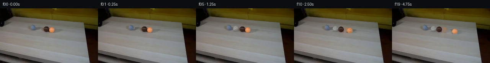

![首帧]()

Round 00
2026-11-04T21:57:29.751922+00:00像素候选变化代码 +303/−0inspection 更新
pixels a25834316393432f · code 399f0b2755d8c41e
查看本轮 generate.py 真实 diff
--- previous/generate.py
+++ current/generate.py
@@ -0,0 +1,303 @@
+"""Local, source-derived pixel animation. No image/model/engine inputs.
+
+Inspect source RGB with Python only; render through NumPy/SciPy and PIL output.
+The frame-0 photograph is preserved exactly. See METHOD.md for limitations.
+"""
+from pathlib import Path
+import json
+import base64
+import numpy as np
+from PIL import Image, ImageDraw
+from scipy.ndimage import map_coordinates, distance_transform_edt, gaussian_filter
+from scipy.sparse import lil_matrix
+from scipy.sparse.linalg import spsolve
+from artifact_io import save
+
+ROOT = Path(__file__).resolve().parent
+SOURCE = np.asarray(Image.open(ROOT / 'first_frame.png').convert('RGB'))
+H, W = SOURCE.shape[:2]
+Y, X = np.mgrid[:H, :W].astype(float)
+SS = 5
+CB = np.array([120.85, 54.9])
+CO = np.array([135.30, 56.80])
+D = (CO - CB) / np.linalg.norm(CO - CB)
+RADII = np.array([7.20, 7.35, 7.17])
+CG = CB - D * ((CB[0] - 85.0) / D[0])
+CENTERS = np.array([CG, CB, CO])
+S0 = np.array([0., np.linalg.norm(CB-CG), np.linalg.norm(CO-CG)])
+EXIT = np.array([92.35, 51.15])
+AXIS = np.array([-D[1], D[0], 0.])
+LIGHT = np.array([-0.40, -0.43, 0.81]); LIGHT /= np.linalg.norm(LIGHT)
+
+
+def photograph_background():
+ """Solve the discrete Laplace equation inside one source-local stencil.
+
+ The stencil contains both balls and their existing local shadows. Its
+ boundary consists solely of surrounding tabletop pixels. No other plate
+ pixel is modified, and the pipe and its shadow stay in the source.
+ """
+ mask = (((X-123.7)/17.2)**2 + ((Y-56.25)/10.0)**2 < 1)
+ mask |= (((X-145.0)/11.)**2 + ((Y-58.9)/5.4)**2 < 1)
+ mask &= (X >= 108) & (Y >= 46) & (Y <= 67)
+ coords = np.argwhere(mask)
+ indices = np.full((H,W), -1, int)
+ indices[mask] = np.arange(len(coords))
+ matrix = lil_matrix((len(coords),len(coords)),dtype=float)
+ rhs = np.zeros((len(coords),3))
+ for k,(y,x) in enumerate(coords):
+ matrix[k,k] = 4
+ for dy,dx in [(-1,0),(1,0),(0,-1),(0,1)]:
+ yy,xx = y+dy,x+dx
+ j = indices[yy,xx]
+ if j >= 0: matrix[k,j] = -1
+ else: rhs[k] += SOURCE[yy,xx]
+ plate = SOURCE.astype(float).copy()
+ plate[mask] = spsolve(matrix.tocsr(),rhs)
+ # Weak deterministic photographic grain prevents an unnaturally flat fill.
+ rng = np.random.default_rng(300)
+ grain = rng.normal(0, .55, (H,W))
+ interior = np.minimum(1, distance_transform_edt(mask)/3)
+ plate += (grain*interior)[...,None] * np.array([1.,.90,.87])
+ return plate, mask
+
+PLATE, CLEAN_MASK = photograph_background()
+
+
+def illumination(nx, ny, nz):
+ diffuse = np.maximum(0., nx*LIGHT[0]+ny*LIGHT[1]+nz*LIGHT[2])
+ return .77 + .24*diffuse
+
+
+def pixel_coverage(center, radius):
+ alpha = np.zeros((H,W))
+ for sy in range(SS):
+ for sx in range(SS):
+ dx = X + (sx+.5)/SS-.5-center[0]
+ dy = Y + (sy+.5)/SS-.5-center[1]
+ alpha += dx*dx+dy*dy <= radius*radius
+ return alpha/(SS*SS)
+
+
+ALBEDO = []
+SHADOWS = []
+for i in [1,2]:
+ c,r = CENTERS[i],RADII[i]
+ a = pixel_coverage(c,r)
+ # Recover foreground colour from a source/background mixture at the edge.
… diff truncated; 216 more lines …